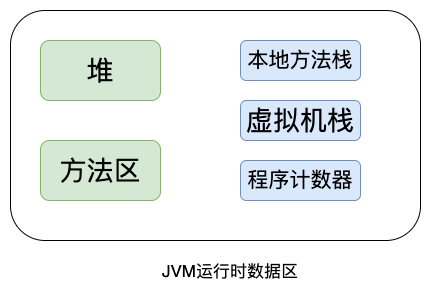
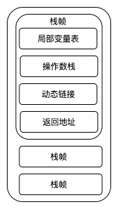
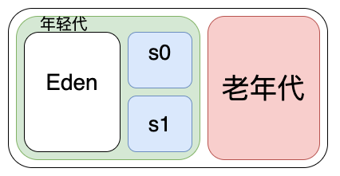

JVM 运行时内存分配
Contents
前言
JVM 是 Java 程序员绕不过去的坎，今天学习下 Java 虚拟机运行时是怎么分配内存的。
JVM 规范中规定， JVM 运行时内存分为程序计数器、虚拟机栈、本地方法栈、方法区、堆，这5个部分，如下图所示。

程序计数器
用来记录程序执行到哪行代码。在方法调用、循环、分支这些操作的时候，我们需要记录程序执行的位置，方便调用完后回到之前的地方。或者CPU切换到其他线程，当前线程被挂起的时候，如果不记录的话，CPU切换回来的时候不知道之前执行到哪一行代码了。
程序计数器是线程私有的，每个线程都有自己的程序计数器。
虚拟机栈
虚拟机栈算是最复杂的一个了，包含了栈帧，局部变量表，操作数栈，动态链接，返回地址。通常虚拟机栈也叫线程栈，里面的数据是线程私有的。
虚拟机栈默认大小是1024，通过 java -XX:+PrintFlagsFinal -version |grep Thread 来查看
uintx ParallelGCThreads = 4 {product}
intx ThreadPriorityPolicy = 0 {product}
bool ThreadPriorityVerbose = false {product}
uintx ThreadSafetyMargin = 52428800 {product}
// 大小是 1024
intx ThreadStackSize = 1024 {pd product}
bool TraceDynamicGCThreads = false {product}
bool UseBoundThreads = true {product}
bool UseBsdPosixThreadCPUClocks = true {product}
bool UseDynamicNumberOfGCThreads = false {product}
bool UseThreadPriorities = true {pd product}
bool VMThreadHintNoPreempt = false {product}
intx VMThreadPriority = -1 {product}
intx VMThreadStackSize = 1024 {pd product}
java version "1.8.0_45"
Java(TM) SE Runtime Environment (build 1.8.0_45-b14)
Java HotSpot(TM) 64-Bit Server VM (build 25.45-b02, mixed mode)
栈帧
栈帧可以看做是一个方法的容器，里面存放了局部变量表、操作数栈、动态链接和返回地址，线程进行方法调用的时候会为每一个方法创建栈帧，所以一个线程可以对应多个栈帧，我们程序的入口 main 函数就是第一个栈帧。
局部变量表
局部变量表中存放了函数中创建的局部变量和函数声明的形参，比如
public void add(int a,int b){
int c = a + b;
}
这个例子中局部变量表的大小是3，存放了 a , b , c 。
操作数栈
操作数栈存放的是我们要操作的数字，比如上面的例子中， a 和 b 是我们要操作的数字，就会把这两个数字放到操作数中，等待操作。操作数栈有点像一个操作的中转站，把要操作的东西放入这里，操作完后放回去。
动态链接
动态链接的作用是我们在方法中调用了另外的方法，我们需要知道这个方法在哪里，所以需要将这个方法的符号引用转换为直接地址，而符号引用存在于方法区中。
返回地址
返回地址有两种情况，一种正常返回，另一种是异常返回。
正常返回的时候通常就是调用者的程序计数器的地址。异常的时候由异常处理器表决定。
一图胜千言

本地方法栈
本地方法栈和虚拟机栈基本相同，不同的是这里针对的是本地方法，这里不再赘述。
方法区
这个名字取的很奇怪，不知道为什么要叫方法区。方法区里面存放的是类的信息，有版本、字段、方法、接口、常量(1.6之前常量池就是在这个地方，1.7之后放到了堆中)、静态变量。
方法区是线程共享的。
堆
这个应该是我们平时接触最多的一类了，平常我们 new 出来的对象都是放到这个区域， GC 回收也主要是对这个区域进行回收。
堆和方法区一样是线程共享的。
堆中的对象按照存储的时间不同，划分为不同的区域，如下所示

一个例子
class HelloWorld
{
public static void main(String[] args)
{
System.out.println(add(1,2));
}
public static int add(int a,int b){
int c = a + b;
return c;
}
}
通过 javap -v 反编译后得到如下字节码指令
Classfile ~/HelloWorld.class
Last modified Apr 10, 2020; size 466 bytes
MD5 checksum 5fab716f162702283230df72c1cb4b51
Compiled from "HelloWorld.java"
class HelloWorld
minor version: 0
major version: 52
flags: ACC_SUPER
Constant pool:
#1 = Methodref #6.#17 // java/lang/Object."<init>":()V
#2 = Fieldref #18.#19 // java/lang/System.out:Ljava/io/PrintStream;
#3 = Methodref #5.#20 // HelloWorld.add:(II)I
#4 = Methodref #21.#22 // java/io/PrintStream.println:(I)V
#5 = Class #23 // HelloWorld
#6 = Class #24 // java/lang/Object
#7 = Utf8 <init>
#8 = Utf8 ()V
#9 = Utf8 Code
#10 = Utf8 LineNumberTable
#11 = Utf8 main
#12 = Utf8 ([Ljava/lang/String;)V
#13 = Utf8 add
#14 = Utf8 (II)I
#15 = Utf8 SourceFile
#16 = Utf8 HelloWorld.java
#17 = NameAndType #7:#8 // "<init>":()V
#18 = Class #25 // java/lang/System
#19 = NameAndType #26:#27 // out:Ljava/io/PrintStream;
#20 = NameAndType #13:#14 // add:(II)I
#21 = Class #28 // java/io/PrintStream
#22 = NameAndType #29:#30 // println:(I)V
#23 = Utf8 HelloWorld
#24 = Utf8 java/lang/Object
#25 = Utf8 java/lang/System
#26 = Utf8 out
#27 = Utf8 Ljava/io/PrintStream;
#28 = Utf8 java/io/PrintStream
#29 = Utf8 println
#30 = Utf8 (I)V
{
HelloWorld();
descriptor: ()V
flags:
Code:
stack=1, locals=1, args_size=1
0: aload_0
1: invokespecial #1 // Method java/lang/Object."<init>":()V
4: return
LineNumberTable:
line 1: 0
public static void main(java.lang.String[]);
descriptor: ([Ljava/lang/String;)V
flags: ACC_PUBLIC, ACC_STATIC
Code:
stack=3, locals=1, args_size=1
0: getstatic #2 // Field java/lang/System.out:Ljava/io/PrintStream;
3: iconst_1
4: iconst_2
5: invokestatic #3 // Method add:(II)I
8: invokevirtual #4 // Method java/io/PrintStream.println:(I)V
11: return
LineNumberTable:
line 5: 0
line 6: 11
public static int add(int, int);
descriptor: (II)I
flags: ACC_PUBLIC, ACC_STATIC
Code:
stack=2, locals=3, args_size=2
0: iload_0
1: iload_1
2: iadd
3: istore_2
4: iload_2
5: ireturn
LineNumberTable:
line 9: 0
line 10: 4
}
SourceFile: "HelloWorld.java"
我们先从程序的入口看，在 main 中可以看到这么一行
5: invokestatic #3 // Method add:(II)I
这一行静态调用了 #3 ，这个 #3 我们可以在常量池中找到，如下所示
#3 = Methodref #5.#20 // HelloWorld.add:(II)I
从这里可以看出 #3 是 add 的方法引用，我们跟进去看看
public static int add(int, int);
descriptor: (II)I
flags: ACC_PUBLIC, ACC_STATIC
Code:
stack=2, locals=3, args_size=2
0: iload_0
1: iload_1
2: iadd
3: istore_2
4: iload_2
5: ireturn
LineNumberTable:
line 9: 0
line 10: 4
在 Code 中可以看到 stack=2 所以操作数栈的大小是2， locals=3 在 add 方法中有变量 a 、 b 、 c 所以局部变量表的长度是3。后面的 args_size 就是形参的个数。
在看具体的指令之前，先来了解一下各个指令是干什么用的
- iload_x 将局部变量表中x索引的值加载到操作数栈栈顶
- istore_x 将操作数栈顶元素存入到局部变量表中x索引的位置
- iadd 将操作数栈顶的两个元素出栈然后相加，并把相加后的结果重新压入栈顶
- ireturn 返回方法结束
所以对于 add 方法来说，执行的过程就是先把 a 放入操作数栈顶，再把 b 放入操作数栈顶。然后把 a, b 都出栈进行相加，得到结果 3，放入操作数栈顶，这时候操作数栈就只有一个3了。最后 istore_2 把3存放到局部变量表索引为 2 的位置(下标从0开始)。
总结
通过上面的学习，知道了 JVM 内存分为程序计数器、虚拟机栈、本地方法栈、方法区、堆。
通过反编译 Java 后看到字节码，有种当年学汇编的感觉，一个加法需要好几条指令。